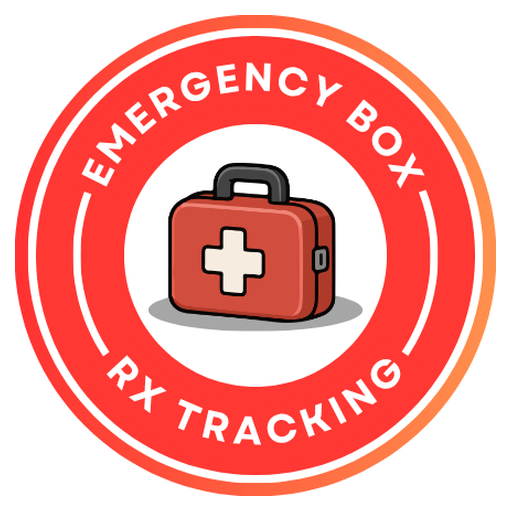

Emergency Box Tracking
ระบบติดตามกล่องยาฉุกเฉิน · โรงพยาบาลศีขรภูมิ
เข้าสู่ระบบ →✓ ติดตั้งแล้ว เปิดได้จากไอคอนบนหน้าจอหลัก
เพิ่มไอคอนลงหน้าจอหลัก
- เปิดหน้านี้ด้วย Safari
- แตะปุ่มแชร์ ด้านล่างจอ
- เลือก เพิ่มไปยังหน้าจอโฮม แล้วแตะ เพิ่ม
กลุ่มงานเภสัชกรรม รพ.ศีขรภูมิ